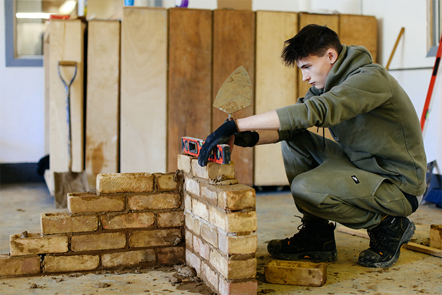
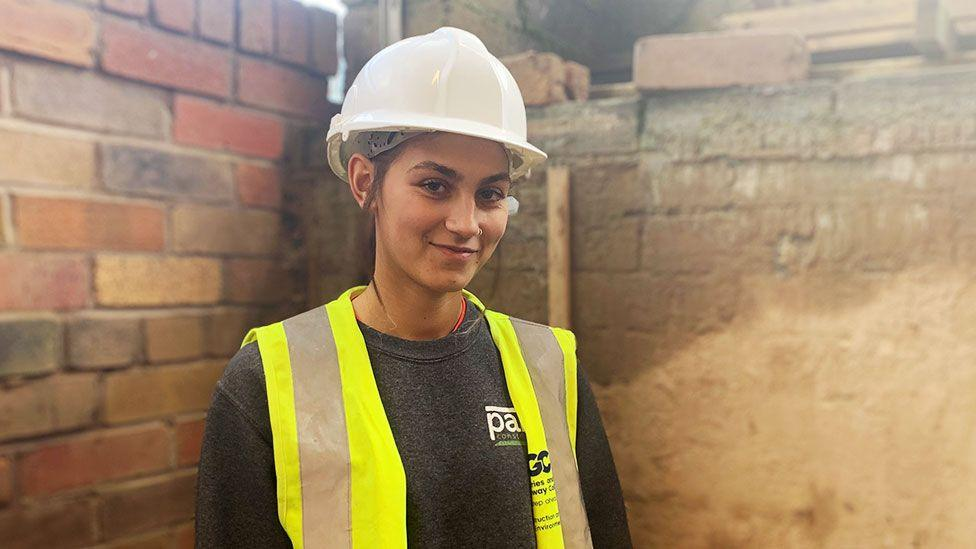

Contact Us
Cardigan Campus

Completing my Level 1 Bricklaying Diploma has given me confidence and practical skills for the construction industry. The tutors were supportive, patient, and always willing to help. I enjoyed learning new techniques in the workshop and now feel prepared to progress onto the Level 2 course.
Finishing the Level 2 Bricklaying Diploma has really improved my skills and confidence on site. The course covered everything from setting out to complex brickwork. The tutors pushed me to achieve high standards, and I now feel ready to begin working professionally within construction.
My bricklaying apprenticeship has been a great experience because I learn on site with my employer and at college with my tutor. Using the college app to upload photos and record projects helps track my progress. I’ve developed practical skills, confidence, and industry knowledge every week.

Completing my bricklaying apprenticeship has helped me gain real site experience while continuing my learning at college. The tutors and employer have both supported my development throughout. I regularly use the college app to record evidence of projects, which makes it easy to monitor my achievements.